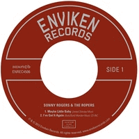

Sonny Rogers and the Ropers - Maybe Little Baby (EP, 2012)
01 - Maybe Little Baby (1:55)
02 - I've Got It Again (2:05)
03 - Honky Tonk Mind (2:15)
© Enviken Records :: [ENREC 4506]
Notes
7" Vinyl, 45 RPM, EP
Two tracks on Side One, and one track on Side Two
reference information: Discogs®
Review
088/366 (Project 366)
Strongly awesome recordings of greatest songs. My experience is based on Digital Release of this EP (so, thanks for an ability to buy it via all modern channels). Top-notch cover versions of Country rockin' sweets. Rockabilly, rockin' and rollin' with hillbilly mood.